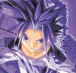

Forums galactiques > Taverne galactique : lieu de discussion informel > IZakaYa - L'alcool encore et toujours...
Pages : 1 2 ... 306 307 308 309
| bruno zieuvair Réputation à la taverne : 0 04/07 ETU 02:08  | Score : 2 Détails " Lara... Lara ???
- mais... depuis tout ce temps... que deviens-tu ? Les guerres puniques et toi, toujours impassible, parfaite justicière, sirotant ton rhum pyrossien devant ton module de combat à éradiquer l'ennemi jusqu'à ce que l'explosion nous sépare... Un long silence, un insecte vert s'aventura sur les doigts de Lara qui joua un instant avec lui, s'échappant de ses propres souvenirs.. " Que deviens-tu Lara ?" | ||
| lara Réputation à la taverne : 87  04/07 ETU 02:17 | Score : 3 Détails - quel bonheur de te revoir aprés tant d'années, j'ai tellement de choses a te raconter....
ce que je deviens.........TU NE VAS PAS ME CROIRE........ c'est énorme et TOI tu es là devant moi en chair et en os, mon Bruno Ma pustule adorée...j'en reviens pas... tu vas boire quelque chose un rhum? autre chose? ....... | ||
| bruno zieuvair Réputation à la taverne : 0 04/07 ETU 02:31 | Score : 2 Détails "Barman... Un Zébulon !!!"
Bruno fixa les plus beaux yeux verts de l'univers, s'y noya lorsqu'il fut rappelé à ce monde par le choc du petit vert de zébulon sur la table. La densité du zébulon est telle qu'en dehors de son verre anti-gravité, il percerait la planète de part en part. "-Lara... Ma chipie adorée... Depuis tout ce temps... depuis notre passage dans les services spéciaux du systè..." Lara posa son index sur la bouche de Bruno, lui faisant comprendre que la taverne n'était pas un lieu sûr pour l'évocation de leur passé trouble. "Lara... tu te souviens, Simon j'étais dans ce monde jusqu'à croiser tes yeux de jade... Lorsqu'un pseudonyme nous avons dû choisir, bruno zieuvair je suis devenu pour toi Lara" Un long silence, l'échange des regards, le passé qui remonte... "Lara... que deviens-tu ?" | ||
| lara Réputation à la taverne : 87 04/07 ETU 02:43 | Score : 3 Détails je......je croyais..... je... coyais que tu étais mort....
je n'avais aucune nouvelle de toi... rien j'ai passé des années à te chercher, à poursuivre notre but... je ne t'ai jamais oublié... parfois encore quand je passe par certains endroits je me rapelle combien nous étions complices!! c'est fou te voir là, je n'en reviens pas! et toi filou? combien de bétises avons nous faites tous les deux, et ces heures de discutions! ces jeux dangeureux qui plus d'une fois auraient pu..... et puis l'explosion.... et puis tu te rapel.... cap ou pas cap???... | ||
| bruno zieuvair Réputation à la taverne : 0 04/07 ETU 03:02 | Score : 3 Détails je me croyais mort Lara... mais cette mort m'était plus douce que notre séparation...
combien de fois avons nous frôlé le dérapage, combien de fois aurions nous pu... Tiens, dans le système Lutetia, te souviens tu... cette aurore sur la 4eme lune de Zgrib... et toi... toujours aussi belle malgré les combats... nos paris stupides... Te rappelles-tu lorsque tu as parié que je n'irai jamais peindre, sur la coque du croiseur tactique de torque : tu n'es qu'une moumoune... 24h pour l'approcher en combi-spatiale... presque nu dans l'espace... pour gagner quoi... te rapelles-tu ce que nous avions parié Lara ? Rappelles le moi. alors, cap ou pas cap ? | ||
| lara Réputation à la taverne : 87 04/07 ETU 03:21 | Score : 3 Détails cap bien sur....
j'ai pas changé^^ comment aurais-je pu oublié!! nos paris, on en a vraiment fait baver à certains........ tout ça pour une mandarine.... et oui pustule je m'en rappele encore! une mandarine...et tu as même fini par la partagé avec moi... à poil 24H a repeindre son vieu clou en rose!!! pour une demi mandarine..... et la colère de ce bon vieu torque.... tu n'as pas soif toi? | ||
| bruno zieuvair Réputation à la taverne : 0 05/07 ETU 04:23 | Score : 0 Détails "Si, bien sûr que si... Allez... Un serendipity..."
Les souvenirs tombaient les uns après les autres, entre l'amertume et la nostalgie. Il est parfois préférable de croiser le fer avec un pirate de l'espace plutôt que de soutenir le regard de jade et d'acier de la plus belle femme de l'univers. Bruno se souvenait combien les hommes aimaient à désirer Lara, combien elle les rendait fou de ces charmes de sorcière. Elle les réduisait, bien malgré elle, à leur portion congrue. Allez Bruno, reprends-toi... Lara est là, c'est ce qui compte maintenant. Revenons-en à nos moutons : "- Lara ? A propos de ce sujet, combien de mandarines penses-tu parier pour notre prochain jeu ? toujours cap ?" | ||
| Mnémosyne Réputation à la taverne : 77 09/07 ETU 12:18 | Score : 0 Détails Mnémosyne entra dans la salle, regarda autour d'elle et dit :
Une vodka et un pastis rouge s'il vous plaît ! Elle chuchotta : je cherche des personnes pour intégrer à ma coalition la C.A.B. ( croisade anti-boulets ) qui comme son nom l'indique à pour but d'exterminer les boulets. Envoyez moi un M.P. si vous êtes interréssez. | ||
| Solasido Réputation à la taverne : 42  09/07 ETU 20:58 | Score : 0 Détails Je rentre dans le bâtiment à la facade rouge écarlate,une clope au bec. J'ai pas dormi de la nuit,les kamikazes que je ramasse sur le coin de la gueule m'ayant empêché de ferme l'oeil.Bordel,ça c'est bien mon vieux... Me pourrir encore la vie,même près avoir commencé à bouffer les pissenlits par la racine. Si j'avais sû,j'me serais débrouillé pour le laisser régler son foutoir lui-même avant de l'envoyer rejoindre les poissons avec un bloc de béton autours des pieds.Enfin bon,inutile de se lamenter. Je me suis vengé pour ces dix ans de ma vie perdus dans une cellule au fin fond du désert,et c'est ce qui compte... Toutefois,je sens que j'ai pas fini d'en baver... Tiens,l'intérieur dépareille pas avec l'aspect externe du bâtiment. Du rouge,du rouge,et du rouge encore. Ecarlate comme le sang. Bon,j'préfère le bleu, mais je vais pas chicaner.Je m'assieds au comptoir,m'affalant à moitié sur mon tabouret. Je passe commande,un petit remontant ne pouvant me faire que du bien. Un peu de compagnie ne serait guère de refus...
Une bouteille de cognac,s'il vous plait. Votre meilleure cuvée... | ||
| romi Réputation à la taverne : 74  10/07 ETU 02:12 | Score : 0 Détails Romi se presenta devant Solasido et lui presenta son respect
Salut solasido junior. Vos planètes ne sont pas defendue ,et vous subisser actuellement une guerre que vous n'avez pas creer. Votre peuple m'a conté les mefaits de votre pere ,et j'espere que vous ne tiendrais pas les commandes comme lui car par sa faute beaucoup de destruction ont eu lieu. J'aimerais vous revoir grand et intelligent ,disposez vous d'un argument pour recuperer votre capitale ou dois je vous la rendre contre votre respect? | ||
| Solasido Réputation à la taverne : 42 10/07 ETU 11:54 | Score : 1 Détails Tiens,que s'passe-t-il encore? Ah,c'est pour me présenter ses respects? Bizarre,vu ce qui me tombe sur la gueule je m'attendais à prendre un pain. Coup de pot c'est pas le cas,j'ai déjà assez de problèmes comme ça à cause du vieux... Reposant à regrets mon verre alors que j'allais l'entamer,je répondis:
Enchanté... Merci tout d'abord d'éviter le junior,étant majeur et débarrassé de mon père je préfère me considérer comme unique porteur du nom. Si vous désirez un argument,je puis vous assurer que, lorsque votre père vous fait enfermer dans une cellule en béton armé et granit pendant une dizaine d'années en vous collant un de ses crimes sur le dos,vous avez encore plus envie de le lapider que ses pires ennemis... Ce que je ne me suis d'ailleurs pas gêné pour faire. Ayant fini ma cigarette,je chope le paquet et en sort deux. Je me colle la première entre les dents et propose l'autre à mon vis-à-vis. Clope? | ||
| romi Réputation à la taverne : 74 10/07 ETU 12:22 | Score : 0 Détails Romi se gratta le menton et fit un signe "point fermé" à un acolyte posté à une table non loing de lui ;qui se leva et parti discretement.
Merci...t'as du feu? Clik... Merci Ok pour ton chez toi ,mais je ne suis plus garant de ce systeme.Catherina en dispose elle aussi ,je te conseille de ne pas la provoquer ,elle est tres réactive. Romi s'adressa au barman: Wisky !! | ||
| Alnia. Réputation à la taverne : 867  18/07 ETU 02:30 | Score : 3 Détails Une petite troupe de Berserkers entra dans l'Izakaya et chassa tous les clochards qui y avaient élu domicile. L'histoire n'a pas retenue dans quel état on les a retrouvé, ni si on les a retrouvé tout court...
Alnia pénétra dans l'établissement, longtemps tenu par son mari, et failli s'étouffer tant la poussière s'y était accumulé. Elle sortit et donna quelques instructions. Tous les meubles furent mis dans la cours arrière et une équipe de nettoyage, lourdement équipée, fit irruption dans la pièce centrale. En deux heures, tout était propre : le sol était lavé, les murs lessivés puis les peintures refaites. Elles étaient maintenant en train de sécher. Pour le souvenir, la pièce avait évidemment été repeinte en rouge. L'Izakaya reprennait un aspect plus digne de ce que cette taverne avait pu être. Tout avait été refait à neuf, et le batiment sentait encore le dilluant. Oh, Alnia se doutait que certains avaient encore des crises d'urticaire rien qu'à la vue d'une goutte de peinture rouge, mais il allait falloir s'y faire. Repeindre ce batiment dans une autre couleur, ç'aurait été comme de repeindre le sourire de l'antique Joconde : un crime contre le patrimoine artistique et culturel galactique. Alnia posa finalement un petit écran d'affichage de seulement quinze mètres par vingt : Pour la réouverture imminente de l'Izakaya, la direction est à la recherche de deux serveurs, à mi-temps. Envoyez les CVs et lettres de motivation à Alnia, reine déviante. Nous sommes aussi à la recherche de personnes capables d'animer la salle principale : soirées dansantes, spectacles, etc. Là aussi, faire parvenir les demandes à Alnia.. | ||
| Alnia. Réputation à la taverne : 867 22/07 ETU 01:41 | Score : 0 Détails Nous avons obtenu une seule réponse à l'heure actuelle. L'offre tient toujours pour le second poste.
| ||
| Alnia. Réputation à la taverne : 867 25/07 ETU 15:00 | Score : 0 Détails Si demain personne ne s'est proposé pour prendre le deuxième poste de serveur, je clos l'affaire et ferme l'Izakaya définitivement !
Dépechez vous, du nerf ! | ||
| Alnia. Réputation à la taverne : 867 25/07 ETU 16:13 | Score : 0 Détails Réouverture de l'Izakaya ce soir, après une petite période de ravalement de façade.
Les deux serveurs seront désormais Saiyen et Jon Snow. La maison se réserve le droit de refuser certains clients s'ils troublent l'ordre. | ||
| Saiyen Réputation à la taverne : 105  25/07 ETU 21:43 | Score : 0 Détails Bonsoir et bienvenue a vous tous!!!
Je suis heureux de vous annoncez la réouverture officielle de l'IZakaYa!!! Les geishas sont toujours la! Nous avons d'ailleurs de nouveau modéles commes les femmes a barbes, ou les pigmées!! Les boissons sont toujours aussi bonnes les unes que les autres!! Nous avons d'ailleurs trouvé un nouveau mélange!! LE T.G.V!! C'est chaud, c'est frais, c'est bon, ça arrache!!! Le premier client aura droit a la chambre rouge gratuitement!! | ||
| Alnia. Réputation à la taverne : 867 25/07 ETU 22:17 | Score : 1 Détails Tiens, mets moi une tisane au sang, j'ai soif.
Oui, là, les trucs qui ressemblent à des tampax usagés... Merci. Pour la Chambre rouge, relance l'opération. Je suis enceinte, je tiens pas à m'amuser avec le petit dans le ventre. | ||
| Le Tremoss Réputation à la taverne : 207  25/07 ETU 22:22 | Score : 0 Détails Bonsoir a vous jeune fille, permettez moi de vous tenir compagnie (barman, un daikiri pour moi)
Vous avez enfin réussi a retrouver du monde pour tenir la teverne d'Oyabun, voila qui est une bonne chose, ç'aurait été tellement dommage qu'un monument tel que l'Iza tombe dans l'oubli, ne croyez vous pas ? | ||
| Alnia. Réputation à la taverne : 867 25/07 ETU 22:28 | Score : 0 Détails L'izakaya est plus qu'un monument. C'est un musée de l'Histoire d'Origine, qui a tout connu, tout vécu, qui a traversé les époques en accumulant des souvenirs.
L'Izakaya peut être mise au rang d'Institution Vitale pour Origine. La soupape de sécurité avant que tout ne lache. |
Pages : 1 2 ... 306 307 308 309
Forums galactiques > Taverne galactique : lieu de discussion informel > IZakaYa - L'alcool encore et toujours...